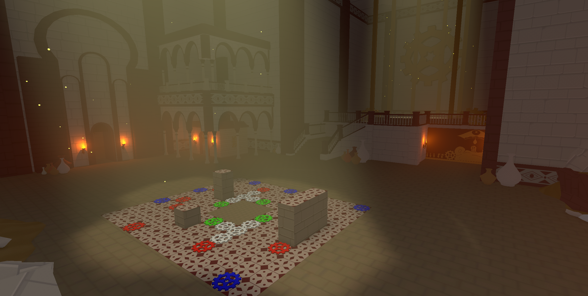
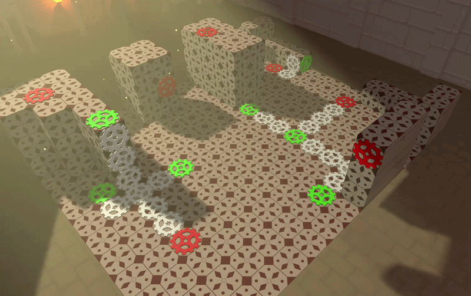
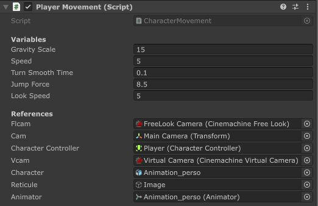

Présentation

| Informations : |
| Moteur : Unity |
| Type de projet : Projet professionnel |
| Mon rôle: Game Programmer |
| Taille du groupe : 2 personnes |
| Temps de développement : 4 mois |
| Github - Itch.io |
Lab O-Fee est le fruit de mon stage de première et troisème année de bachelor à l'ICAN Lille. Le but de ce projet est ludifier et automatiser la passation d'experience scientifique. Les points clés on été un concept de jeu permettant de récupéré des data scientifique utilisable, ainsi que l'implémentation de la récolte des données.
Enregistrement des données de jeu

Pour que les valeurs puissent être utilisé scientifiquement parlant, il fallait enregistrer non seulement les actions du joueur, mais aussi le contexte (la position des verres, si la lumière est allumé, depuis combien de temps le joueur joue). Durant sa partie, le jeu enregistres ses différentes informations à un intervalle régulier et les stock dans des listes. En fin de partie, durant l'animation présentant le score au joueur, le jeu créer un fichier .csv et écris les différentes informations stockées dans celui-ci. Ce choix permet de ne pas prendre trop de ressources sur les ordinateurs moins performants.
Envoie des données>/p>

Afin de pouvoir automatiser la récolte de données, le jeu envoie automatiquement une requête php à un serveur